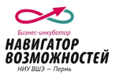
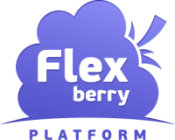
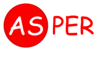
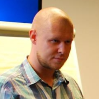
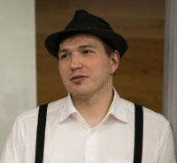
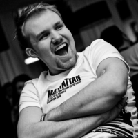
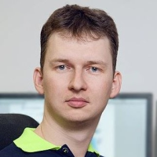

D59 - это первая пермская конференция разработчиков ПО
Время проведения: 27 апреля с 11:00 до 20:00.
Место проведения: г. Пермь, бизнес-центр «Синица», ул. Стахановская, 45.
Только лучшие ИТ-компании и лучшие разработчики, а также звезды пермской ИТ-сцены, всего максимум 100 человек по предварительной регистрации.
Организаторы решили предоставить билеты лучшим студентам и преподавателям профильных ВУЗов по символической цене, а также школьникам-олимпиадникам бесплатно.
Яркие, живые доклады «полумарафончики» продолжительностью максимум 21 мин + 9 минут на вопросы-ответы.
Никакой рекламы, пропаганды и прочей ерунды, говорим только о своих продуктах и проектах, делимся опытом, любым, главное чтобы было интересно и полезно широкому кругу, и желательно свеженьким, не протухшим.
Интересные детали, технические подробности, выбор фреймворков, архитектура и прочие няшки которые любят разработчики. Отрицательный опыт также важен как положительный.
Кулуарное, неформальное общение. Интенсивный обмен опытом.
Суббота, 14 докладов по 30 минут + перерывы.
Афтепати в баре "Соль".
Как принять участие?
Для того, чтобы стать участником конференции необходимо зарегистрироваться и оплатить участие. Все стандартные билеты уже разошлись, но у вас все еще есть возможность стать участником купив билет за 1600 р. Количество таких билетов ограничено, покупая билет себе вы фактически оплачиваете еще один талантливому школьнику или студенту.
Регистрация
Важно! Все организационные расходы конференции покрываются исключительно за счет оплаты участия самими участниками. У мероприятия нет спонсоров, соответственно вы не услышите рекламных речей, никто не будет хантить ваших сотрудников и промывать им мозги. Все доклады будут исключительно содержательными и полезными для вашего профессионального развития.
Организатор конференции

Партнеры конференции
Партнеры конференции - это пермские (и не только) компании, которые делегировали докладчиков и готовы поделиться своим опытом, либо помогают нам с организацией мероприятия. Мы, организаторы конференции, очень благодарны им за это.







| 10:30 - 11:00 | Регистрация |
| 11:00 - 11:15 | Открытие конференции |
| 11:15 - 11:45 | Люди Rahul Panday. Опыт работы с разработчиками из России. Взгляд индийского разработчика :) |
Выпускник IIT Kharagpur (индийский MIT), бывший сотрудник Sybase, работавший над оптимизатором запросов в одной из крупнейших промышленных СУБД, рассказывает о своем опыте работы с разработчиками из России и «индусском говнокоде». |
| 11:45 - 12:15 | Технологии Евгений Нестеров. Опыт разработки онлайн игры «Путь тренера» |
В докладе будет рассказано про современные способы построения серверных и клиентских решений на базе Scala и HTML5, а также про опыт разработки многопользовательских кросс-платформенных игр. |
| 12:15 - 12:45 | Интерфейсы Дмитрий Чирков. Проектирование взаимодействия - пользовательский опыт |
Инструменты визуализации как новый язык работы с данными. Ремесло или искусство? Яркие примеры и тренды развития. |
| 12:45 - 13:15 | Технологии Павел Якутов. Высоконагруженные системы доставки контента: оптимизация аппаратных и человеческих затрат |
Разработчики федеральной сети доставки контента, обслуживающей десятки тысяч пользователей, делятся своим опытом. |
| 13:15 - 13:30 | Кофе-пауза |
| 13:30 - 14:00 | Технологии Денис Чистяков. JavaScript на фронте и в тылу |
Перед разработчиками Яндекс.Спорт стояла задача – разработать сервис, который работает быстро, держит высокие нагрузки и имеет сильную контентную составляющую. Мы расскажем, почему для решения задачи выбрали Node.js, как с его помощью получили прозрачное использование шаблонов и функций на фронтенде и бэкенде. А также развеем несколько мифов и страхов перед Node.js. |
| 14:00 - 14:30 | Люди Евгений Васёв. Тернистый путь от сборки релизов до непрерывной интеграции |
История компании Enaza, о трудностях повышения качества кода, частых релизов, перехода с SVN на Git, и хэппи-эндом в виде автоматизации тестирования и внедрения continuous delivery. |
| 14:30 - 15:00 | Энтерпрайз Олег Черемисин. Мобильная разработка в суровом энтерпрайзе )) |
Почему иногда не получается отдать разработку внешнему исполнителю, даже если очень хочется. Почему узкоспециализированные приложения могут пугать своей запутанностью. И как сделать всех счастливыми быстро и недорого. |
| 15:00 - 15:30 | Технологии Михаил Аникеев и Владимир Бугай. Найти за одну секунду или интеллектуальный поиск данных в многогигабайтном массиве данных своими руками |
Разработчики сайта knoema.com рассказывают о том, как им удалось реализовать почти мгновенный и лучший в своем классе поиск среди огромного массива данных без использования кластеров и вообще каких-либо серьезных вливаний в железо. |
| 15:30 - 15:45 | Кофе-пауза |
| 15:45 - 16:15 | Люди Андрей Хусид. Когда и как стартовать с проектом |
|
| 16:15 - 16:45 | Энтерпрайз Андрей Кожевников. C Windows на Linux? Возможно! |
Разработчик компании Прогноз расскажет об опыте портирования крупного (3M+ LOC) программного продукта с Windows на ОС семейства Linux. |
| 16:45 - 17:15 | Интерфейсы Иван Долгов. Рассказ о том, как подружились виртуальность с реальностью |
Поговорим о том, что такое UX и Информационная архитектура, как разрабатывать программы для людей, и как в одном проекте совместить виртуальный и реальный миры (на действующем примере аналога интернет-магазина в Перми — аудитория растет, себестоимость обслуживания падает :) |
| 17:15 - 17:45 | Технологии Илья Лисняк. Сетевые войны: DDoS и спам-протекты на ниве конкурентной борьбы |
// детали доклада будут представлены позже, будет очень интересно |
| 17:45 - 18:00 | Кофе-пауза |
| 18:00 - 18:15 | Люди Инкогнито. Люди как основа ИТ-бизнеса: столкновение интересов хозяев и рабов, отрицательный опыт мотивации, пути решения |
Руководитель одной из успешных пермских ИТ-компаний расскажет о своем опыте мотивации персонала и столкновении интересов наемных сотрудников и владельцев бизнеса. |
| 18:15 - 19:30 | Люди Антон Волков. Свобода и ответственность |
Цитата из твиттера: "Доклад Антона Волкова - просто бомба. Ему удалось построить русский Valve, где Agile самозарождается. Must see всем!"
Антон расскажет о том, как веб-студия превратилась в инвестиционный проект, потратила все деньги и в последний момент выстрелила успешной браузерной игрой. Как успех испортил компанию и началась ранняя бюрократизация. Как внедряли agile и ничего не получилось. Как изменился подход в управлении, чтобы создать в коллективе доверительные и ответственные отношения. И как в итоге работать с эффективностью стартапа будучи уже немаленькой компанией. |
| 19:30 | Окончание конференции |
Антон Волков
Пионер Flash-разработки, один из основателей AlternativaPlatform, продюсер игры Танки Онлайн.
Денис Чистяков
Руководитель группы интерфейсов в екатеринбургском Яндексе.
Андрей Хусид
Тот самый рыжий парень из "Иванушек", чемпион города Перми по нетворкингу.
CEO RealtimeBoard.com и основатель Vitamin Group.
Facebook | Twitter
Евгений Васёв
Заместитель технического директора, руководитель отдела качества в компании Enaza.
 Инкогнито. Руководитель ИТ-компании
Инкогнито. Руководитель ИТ-компании
Выросший из подвала ИТ долларовый миллионер.
 Rahul Panday
Rahul Panday
Выпускник IIT Kharagpur (индийский MIT), бывший сотрудник Sybase, работавший над оптимизатором запросов в одной из крупнейших промышленных СУБД. Ведущий разработчик, Knoema.
Илья Лисняк
Более 8 лет работает на рынке хостинга. Его компании в США и Великобритании предоставляют серверные мощности для корпоративного сектора, чьи потребности - высокий уровень защиты данных, динамичный подход к нейтрализации DDoS атак и работа с другими внешними угрозами.
Дмитрий Чирков
Руководитель направления диджитал Vitamin Group.
 Владимир Бугай
Владимир Бугай
Сооснователь и технический директор Knoema.
 Евгений Нестеров
Евгений Нестеров
Руководитель направления разработки игр компании «Мобильный Актив».
 Олег Черемисин
Олег Черемисин
Ведущий инженер-программист ЗАО Новомет-Пермь. Мечтает, чтобы суровые энтерпрайзные приложения стали няшными и дружелюбными, а их пользователи счастливыми. Интересы в личное время: семья, путешествия.
 Андрей Кожевников
Андрей Кожевников
Разработчик с десятилетним стажем. Заместитель руководителя направления разработки системного ПО компании "Прогноз".
Иван Долгов
В IT сфере и швец, и жнец и на дуде игрец. В составе Usability Lab руководил разработкой интерфейсов для ЛК ОАО "Ростелеком". Сооснователь форума Mikai.ru.
Докладчикам
Если вам есть чем поделиться с пермским ИТ-сообществом и вы бы желали стать докладчиком, присылайте информацию о себе и теме вашего доклада на d59conf@knoema.com. Формат конференции расчитан на доклады широкого профиля, повествующие о собственном опыте на конкретных проектах без углубления в технические детали. Абсолютно не приветствуется открытая и скрытая реклама, пиар и прочие штучки, характерные для многих мероприятий.
Участникам
Если у вас возникли сложности при регистрации или оплате участия, пожалуйста, пишите нам в Facebook, Twitter либо на почту d59conf@knoema.com. Мы постараемся максимально оперативно решить ваши проблемы.
Прочие вопросы
По любым другим вопросам, касающимся конференции, вы можете обращаться к Владимиру @bougay, либо пишите на d59conf@knoema.com
D59 — это не только возможность послушать рассказы интересных людей на интересные темы, позадавать вопросы докладчикам и пообщаться в кулуарах с другими участниками, но и также общение участников в сильно неформальной обстановке…

Афтепати конференции пройдет в одном из баров города, вечером 27 апреля. Начало в 21:00, вход свободный, каждый платит сам за себя.
В программе продолжение обсуждения тем, затронутых на докладах, вам удастся вживую пообщаться с докладчиками в неформальной обстановке и услышать их личное мнение на ту или иную тему.
Мало ли, чего они не досказывают в докладах, по нашему опыту самые интересные кейсы и слухи узнаются как раз на таких мероприятиях.
Ну и, конечно же, горячительные напитки и закуски к вашим услугам.